Практика 8. Зоопарк непрерывных распределений¶
Цель. Три базовых непрерывных — равномерное, экспоненциальное, нормальное — и зоопарк производных: таблица, плотность, где живёт каждое.
Ход пары
- Равномерное
- Экспоненциальное
- Нормальное
- Хи-квадрат
- Гамма
- Коши
- Стьюдент
- Фишер
- Логнормальное
В отличие от дискретных распределений, где каждое создано под конкретную цель, основная польза известных непрерывных — в том, что они удобно связаны друг с другом.
Берём три распределения с понятным физическим смыслом (равномерное, экспоненциальное, нормальное) и выводим из них остальные.
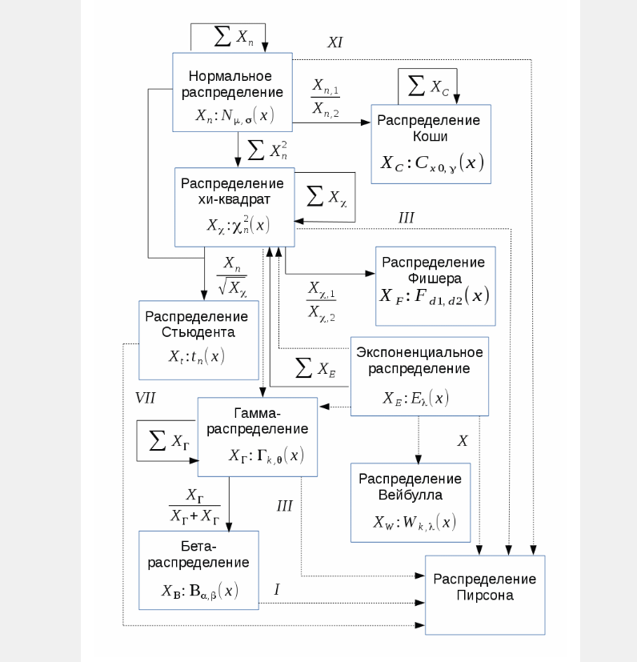
Равномерное¶
Теория¶
| \(U(a,b)\) | |
|---|---|
| Носитель | \(x\in[a,b]\) |
| Функция распределения | \(0\) при \(x<a\); \(\dfrac{x-a}{b-a}\) при \(a\le x\le b\); \(1\) при \(x>b\) |
| Плотность | \(\dfrac{1}{b-a}\) на \((a,b)\) |
| Матожидание | \(\dfrac{a+b}{2}\) |
| Дисперсия | \(\dfrac{(b-a)^2}{12}\) |
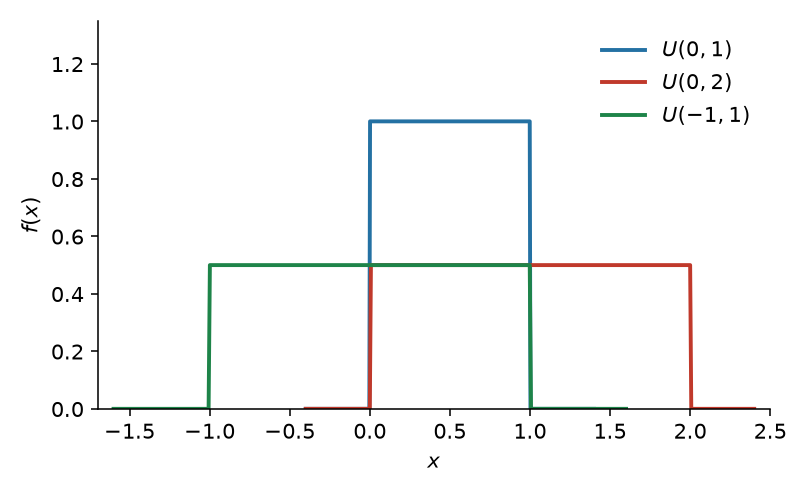
Чаще всего возникает в геометрических задачах и в задачах, где мы ничего не знаем об объекте.
Задача 8.1. Светофор¶
Светофор 20 секунд горит зелёным и 40 секунд красным. Посчитайте вероятность, что когда вы подойдёте, придётся ждать не менее 15 секунд.
Решение¶
Открыть
Цикл 60 с, момент подхода равномерен на цикле. Ждать можно только на красном: если от начала красного прошло \(u\) секунд, остаток \(40-u\). Нужно \(40-u\ge 15\), то есть \(u\le 25\). Окно 25 с из 60:
Экспоненциальное¶
Теория¶
| \(\operatorname{Exp}(\lambda)\) | |
|---|---|
| Носитель | \(x\in[0;+\infty)\) |
| Функция распределения | \(1-e^{-\lambda x}\) при \(x\ge 0\) |
| Плотность | \(\lambda e^{-\lambda x}\) при \(x\ge 0\) |
| Матожидание | \(\dfrac{1}{\lambda}\) |
| Дисперсия | \(\dfrac{1}{\lambda^2}\) |
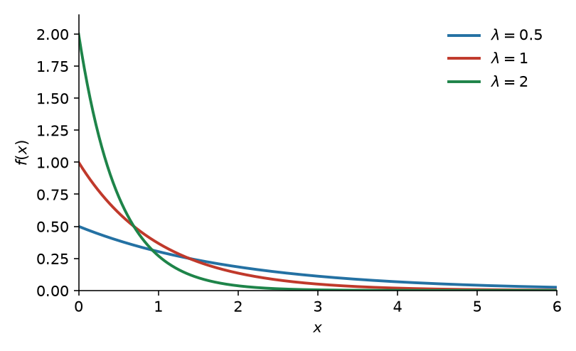
Практический пример:¶
Показательный закон надёжности: длительность времени безотказной работы элемента. Интервалы простейшего потока событий — тоже экспоненциальные: время до первого события.
Экспоненциальное можно использовать только при отсутствии старения: вероятность поломки за промежуток \(X\) не зависит от того, где этот \(X\) расположен и наоборот: при отсутствии старения можно использовать только экспоненциальное. Должно выполняться \(P(X)P(Y) = P(X+Y)\), а решения этого уравнения всегда вида \(e^{ax}\).
Для жизни одной детали этого достаточно. Если отказ — первое событие потока, к отсутствию старения добавляется постоянная интенсивность (стационарность); ординарность нужна, чтобы в \(dt\) писать \(\lambda\,dt\).
Задача 8.2. Надёжность элемента¶
Длительность времени безотказной работы элемента имеет показательное распределение \(F(t)=1-e^{-0{,}01t}\) \((t>0)\). Найти вероятность того, что за время длительностью \(t=50\) ч элемент не откажет.
Решение¶
Открыть
Функция надёжности \(R(t)=e^{-\lambda t}\) определяет вероятность безотказной работы элемента за время длительностью \(t\):
Тот же ответ как дополнение: \(F(50)=1-e^{-0{,}5}=0{,}394\), отсюда \(1-0{,}394=0{,}606\).
Нормальное¶
Теория¶
| \(N(\mu,\sigma^2)\) | |
|---|---|
| Носитель | \(x\in(-\infty;+\infty)\) |
| Функция распределения | \(\Phi\bigl((x-\mu)/\sigma\bigr)\), где \(\Phi(x)=\dfrac{1}{\sqrt{2\pi}}\displaystyle\int_{-\infty}^{x} e^{-t^{2}/2}\,dt\) |
| Плотность | \(\dfrac{1}{\sigma\sqrt{2\pi}}\,e^{-\frac12\bigl((x-\mu)/\sigma\bigr)^2}\) |
| Матожидание | \(\mu\) |
| Дисперсия | \(\sigma^2\) |
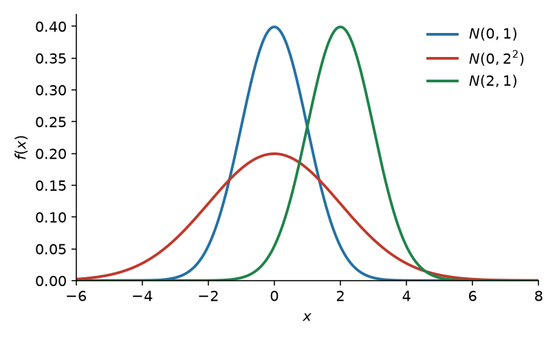
Существует ЦПТ: центральные предельные теоремы (ЦПТ) — класс теорем в теории вероятностей, утверждающих, что сумма достаточно большого количества слабо зависимых случайных величин, имеющих примерно одинаковые масштабы (ни одно из слагаемых не доминирует, не вносит в сумму определяющего вклада), имеет распределение, близкое к нормальному.
Из-за этого распределение многих вещей в природе близко к нормальному: - погрешности измерений - рост людей - точка, куда попадёт стрела по оси \(X\)
Задача 8.3. Ошибка измерения вала¶
Производится измерение диаметра вала без систематических (одного знака) ошибок. Случайные ошибки измерения \(X\) подчинены нормальному закону со средним квадратическим отклонением \(\sigma=10\) мм. Найти вероятность того, что измерение будет произведено с ошибкой, не превышающей по абсолютной величине 15 мм.
Решение¶
Открыть
Математическое ожидание случайных ошибок равно нулю, поэтому применим формулу \(P(|X|<\delta)=2\Phi(\delta/\sigma)\). Положив \(\delta=15\), \(\sigma=10\), находим \(P(|X|<15)=2\Phi(1{,}5)\). По таблице приложения 2 находим: \(\Phi(1{,}5)=0{,}4332\). Искомая вероятность
Здесь \(\Phi\) — функция Лапласа Гмурмана. Через стандартную ФР из таблички: \(2\Phi(1{,}5)-1\).
Хи-квадрат¶
Теория¶
| \(\chi^2(k)\) | |
|---|---|
| Носитель | \(x\in[0;+\infty)\) |
| Функция распределения | \(\dfrac{\gamma(k/2,\,x/2)}{\Gamma(k/2)}\) |
| Плотность | \(\dfrac{(1/2)^{k/2}}{\Gamma(k/2)}\,x^{k/2-1}e^{-x/2}\) |
| Матожидание | \(k\) |
| Дисперсия | \(2k\) |
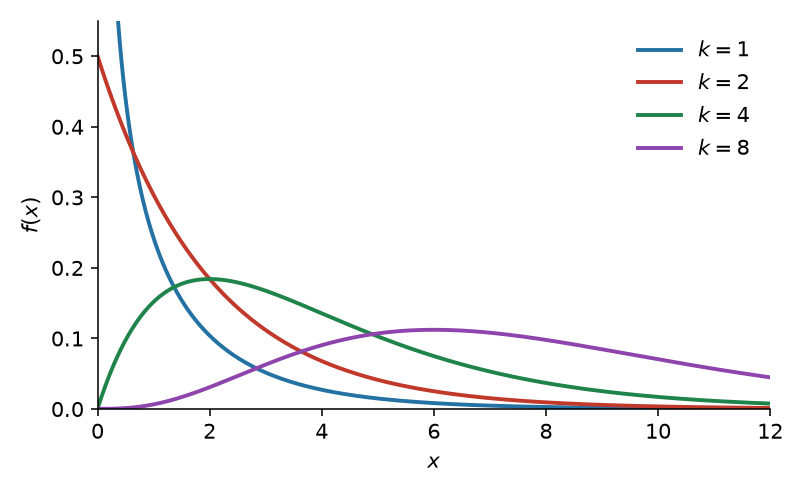
Его уже получили в практике 7, возведением стандартного нормального в квадрат: если \(Z_1,\ldots,Z_k\) независимы и \(N(0,1)\), то \(Z_1^2+\cdots+Z_k^2\sim\chi^2(k)\). Живёт в матстате: выборочная дисперсия нормальной выборки, критерий согласия Пирсона.
Задача 8.4. Сумма хи-квадрат¶
Доказать, что сумма хи-квадрат есть хи-квадрат.
Решение¶
Открыть
Независимые \(X\sim\chi^2(k)\), \(Y\sim\chi^2(m)\). По формуле суммы с практики 7
Носители \([0,+\infty)\), поэтому интеграл по \(x\in[0,z]\) при \(z>0\):
Замена \(x=zt\), \(dx=z\,dt\):
Интеграл Эйлера: \(\displaystyle\int_0^1 t^{a-1}(1-t)^{b-1}\,dt=\Gamma(a)\Gamma(b)/\Gamma(a+b)\) при \(a=m/2\), \(b=k/2\). Тогда
а это плотность \(\chi^2(k+m)\).
Если не хочется вспоминать интеграл Эйлера: достаточно свёртки с \(\chi^2(2)\). У \(\chi^2(2)\) плотность \(\frac12 e^{-x/2}\), интеграл становится \(\int_0^z x^{k/2-1}\,dx\), и \(\Gamma(k/2+1)=(k/2)\Gamma(k/2)\) даёт \(\chi^2(k+2)\). Дальше индукция по чётному слагаемому.
Гамма¶
Теория¶
Форма \(k>0\), интенсивность \(\lambda>0\) (как у экспоненциального). Другая параметризация — масштаб \(\theta=1/\lambda\).
| \(\Gamma(k,\lambda)\) | |
|---|---|
| Носитель | \(x\in(0;+\infty)\) |
| Функция распределения | \(\dfrac{\gamma(k,\,\lambda x)}{\Gamma(k)}\) |
| Плотность | \(\dfrac{\lambda^k}{\Gamma(k)}\,x^{k-1}e^{-\lambda x}\) |
| Матожидание | \(\dfrac{k}{\lambda}\) |
| Дисперсия | \(\dfrac{k}{\lambda^2}\) |
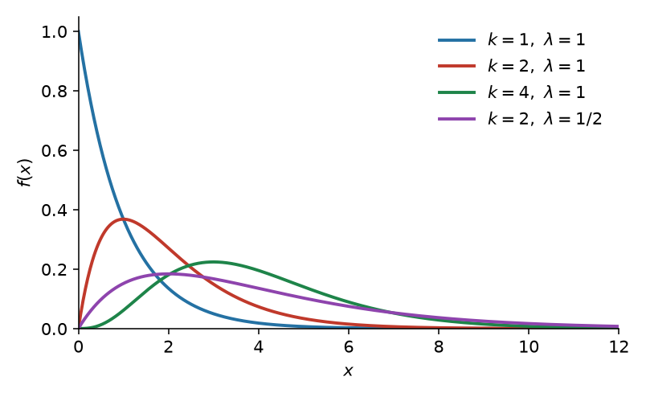
Время до \(n\)-го события простейшего потока; суммы времён обслуживания, осадки, страховые выплаты. Для этого нужны все три аксиомы простейшего потока: интервалы н.о.р. экспоненциальные с постоянным \(\lambda\), события поодиночке.
Связь с уже известными:
- \(\operatorname{Exp}(\lambda)=\Gamma(1,\lambda)\)
- Эрланг: \(\Gamma(n,\lambda)\) при целом \(n\) — сумма \(n\) независимых \(\operatorname{Exp}(\lambda)\)
- \(\chi^2(k)=\Gamma(k/2,\,\lambda=1/2)\)
Задача 8.5. Сумма экспоненциальных¶
Посчитать сумму \(N\) экспоненциальных распределений.
Решение¶
Открыть
Независимые \(X_i\sim\operatorname{Exp}(\alpha)\), плотность \(\alpha e^{-\alpha x}\). Свёртка двух:
С третьим:
По индукции сумма \(N\) штук:
(Эрланг). В общем виде \(\dfrac{\alpha^n x^{n-1}e^{-\alpha x}}{\Gamma(n)}\); \(\chi^2(n)=\Gamma(n/2,\,1/2)\).
Коши¶
Теория¶
| \(C(x_0,y)\) | |
|---|---|
| Носитель | \(x\in(-\infty;+\infty)\) |
| Функция распределения | \(\dfrac{1}{\pi}\operatorname{arctg}\dfrac{x-x_0}{y}+\dfrac12\) |
| Плотность | \(\dfrac{1}{\pi y\bigl(1+\bigl((x-x_0)/y\bigr)^2\bigr)}\) |
| Матожидание | не существует |
| Дисперсия | не существует |
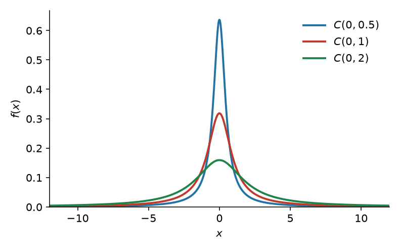
Отношение двух независимых стандартных нормальных; ордината случайного луча (задача ниже). Хвосты настолько тяжёлые, что нет матожидания: выборочное среднее не сходится к константе (снова Коши), ЦПТ не работает. Стандартное \(C(0,1)\) — это Стьюдент с \(\nu=1\).
Задача 8.6. Луч Коши¶
В прямоугольной системе координат \(xOy\) из точки \(A(4; 0)\) наудачу (под произвольным углом \(t\)) проведён луч, пересекающий ось \(Oy\). Найти плотность \(g(y)\) распределения вероятностей ординаты \(y\) точки пересечения проведённого луча с осью \(Oy\).
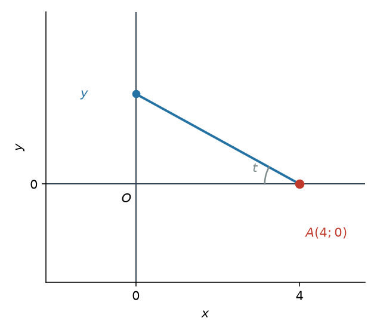
Решение¶
Открыть
Угол \(t\) можно рассматривать как случайную величину, распределённую равномерно в интервале \((-\pi/2,\,\pi/2)\), причём в этом интервале плотность распределения
вне рассматриваемого интервала \(f(t)=0\).
Из рис. 7 следует, что ордината \(y\) связана с углом \(t\) следующей зависимостью: \(y=4\operatorname{tg} t\). Эта функция в интервале \((-\pi/2,\,\pi/2)\) монотонно возрастает, поэтому для отыскания искомой плотности распределения \(g(y)\) применима формула
где \(\psi(y)\) — функция, обратная функции \(y=4\operatorname{tg} t\).
Найдём \(\psi(y)\):
Найдём \(\psi'(y)\):
Следовательно,
Найдём \(f\bigl[\psi(y)\bigr]\). Так как \(f(t)=1/\pi\), то
Подставив \((**)\) и \((***)\) в \((*)\), окончательно получим
причём \(-\infty<y<\infty\) (последнее следует из того, что \(y=4\operatorname{tg} t\) и \(-\pi/2<t<\pi/2\)). Это \(C(0,4)\).
Стьюдент¶
Теория¶
| \(t_\nu\) | |
|---|---|
| Носитель | \(x\in(-\infty;+\infty)\) |
| Функция распределения | \(\dfrac12+\dfrac{x\,\Gamma\bigl((\nu+1)/2\bigr)}{\sqrt{\nu\pi}\,\Gamma(\nu/2)}\,{}_2F_1\bigl(\tfrac12,\tfrac{\nu+1}{2};\tfrac32;-x^2/\nu\bigr)\) |
| Плотность | \(\dfrac{\Gamma\bigl((\nu+1)/2\bigr)}{\sqrt{\nu\pi}\,\Gamma(\nu/2)}\bigl(1+x^2/\nu\bigr)^{-(\nu+1)/2}\) |
| Матожидание | \(0\) при \(\nu>1\); иначе не существует |
| Дисперсия | \(\dfrac{\nu}{\nu-2}\) при \(\nu>2\); иначе не существует |
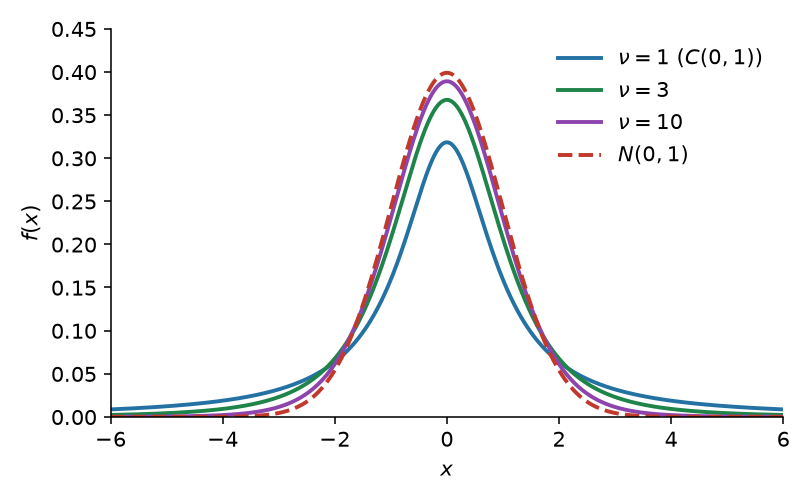
Если \(Z\sim N(0,1)\) и \(V\sim\chi^2(\nu)\) независимы, то
На схеме пары: нормальное, делённое на корень из хи-квадрат. При \(\nu=1\) это Коши; при \(\nu\to\infty\) плотность идёт в \(N(0,1)\).
В матстате: нормальная выборка, \(\sigma\) неизвестна — статистика \((\bar X-\mu)/(s/\sqrt n)\) имеет распределение Стьюдента. Отсюда \(t\)-критерии и доверительные интервалы для среднего.
Фишер¶
Теория¶
| \(F(d_1,d_2)\) | |
|---|---|
| Носитель | \(x\in(0;+\infty)\) |
| Функция распределения | \(I_{\frac{d_1 x}{d_1 x+d_2}}\bigl(\tfrac{d_1}{2},\tfrac{d_2}{2}\bigr)\) |
| Плотность | \(\dfrac{1}{B(d_1/2,\,d_2/2)}\Bigl(\dfrac{d_1}{d_2}\Bigr)^{d_1/2} x^{d_1/2-1}\bigl(1+\tfrac{d_1}{d_2}x\bigr)^{-(d_1+d_2)/2}\) |
| Матожидание | \(\dfrac{d_2}{d_2-2}\) при \(d_2>2\) |
| Дисперсия | \(\dfrac{2d_2^2(d_1+d_2-2)}{d_1(d_2-2)^2(d_2-4)}\) при \(d_2>4\) |
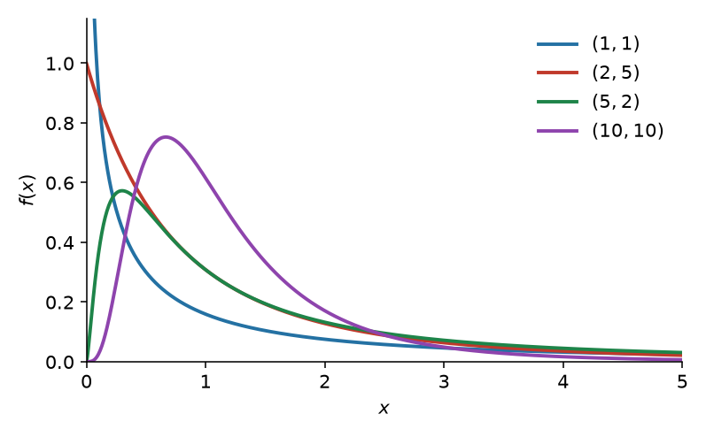
Если независимые \(U\sim\chi^2(d_1)\), \(V\sim\chi^2(d_2)\), то
На схеме: отношение двух хи-квадрат. В матстате — сравнение двух выборочных дисперсий, дисперсионный анализ.
Логнормальное¶
Теория¶
| \(\operatorname{LogN}(\mu,\sigma^2)\) | |
|---|---|
| Носитель | \(x\in(0;+\infty)\) |
| Функция распределения | \(\Phi\bigl((\ln x-\mu)/\sigma\bigr)\) |
| Плотность | \(\dfrac{1}{x\sigma\sqrt{2\pi}}\exp\bigl[-(\ln x-\mu)^2/(2\sigma^2)\bigr]\) |
| Матожидание | \(e^{\mu+\sigma^2/2}\) |
| Дисперсия | \(\bigl(e^{\sigma^2}-1\bigr)e^{2\mu+\sigma^2}\) |
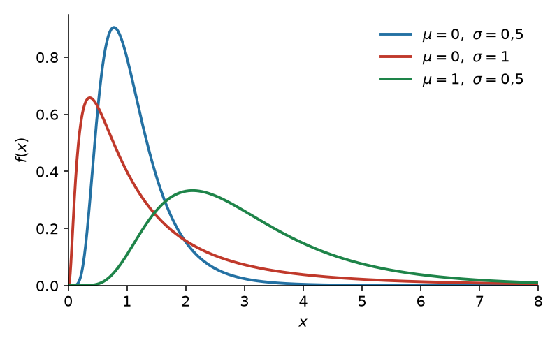
Логнормальное распределение появляется как распределение преобразования \(X=e^Y\), где \(Y\sim n(\mu,\sigma^2)\).
- Нормальное распределение моделирует аддитивное наполнение ошибки
- Логнормальное распределение моделирует мультипликативное наполнение ошибки
Например, рассмотрим модель экспоненциального роста популяции \(N\)
где \(r\) — скорость роста и \(\omega(t)\) — некоторый случайный шум.
Самостоятельная¶
3 минуты. Бомбардировщик пролетел вдоль моста \(30 \times 8\) м и сбросил бомбы. \(X\) и \(Y\) (расстояния от вертикальной и горизонтальной осей симметрии моста до места падения) независимы, СКО равны 6 и 4, матожидания равны 0. Найти вероятность попадания в мост (можно формулу).
Решение¶
Открыть
Попадание: \(|X|<15\), \(|Y|<4\). Независимость и нормальность \(N(0,6^2)\), \(N(0,4^2)\). Через стандартную ФР из таблички:
3 минуты. Умный ученик получает в среднем 1 озарение за 40 минут домашки. Считая озарения простейшим потоком, вероятность получить \(2{,}5\) озарения не более чем за час (можно формулу).
Решение¶
Открыть
Простейший поток, \(\lambda=1/40\) (в минуту). Время до \(n\)-го события — \(\Gamma(n,\lambda)\). Нужно \(P(S_{2{,}5}\le 60)\):
Для целого \(n\) это то же самое, что \(P(N(t)\ge n)\); здесь \(n\) не целое — поэтому гамма, а не Пуассон.
Домашнее задание
HW8_y2023.pdf